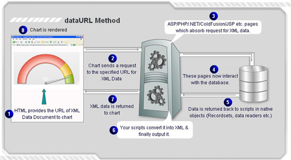

| Data URL Method |
|
Using this method, you need to provide the URL of chart's data-source (XML/JSON). The chart sends a request for data to the specified URL, reads it, parses it and then renders the charts accordingly. This method can be used to render a new chart or update an existing chart. The image below (followed by the listed steps) illustrate the process involved in a generic Data URL Method:  |
Effectively, in this process you need the following to build a chart:
|
Sample Usage of Data URL method using FusionCharts JavaScript Class |
<div id="chart1div">
This text is replaced by the chart.
</div>
<script type="text/javascript">
var chart1 = new FusionCharts("AngularGauge.swf", "ChId1", "600", "400", "0", "1");
chart1.setXMLUrl("Data.aspx");
chart1.render("chart1div");
</script>
FusionCharts JavaScript Class provides other functions to achieve the same : setJSONUrl, setChartDataUrl, setChartData, setDataURL (deprecated) |
| Using various server-side scripts |
To ease embedding of charts in your web pages, FusionWidgets provides wrapper classes (FusionCharts wrapper classes) ready for various server-side scripts like Classic ASP, ASP.NET C#, ASP.NET VB.NET, PHP, J2EE, Ruby on Rails and ColdFusion. FusionCharts wrapper classes are present in the FusionCharts XT pack. If you do not have the licensed pack of FusionCharts XT, you can directly download the trial version of FusionCharts XT and get the fully functional wrapper classes from the pack. The wrapper classes are present in the Code folder of FusionCharts XT Download Pack. Here, we provide highlights of code snippets that are used in each technology to embed FusionWidgets using Data URL method. |
| Using Classic ASP |
| Call renderChart("../../Charts/AngularGauge.swf", "Data/Data.asp", "", "myFirst", 600, 300, false, false) |
Read more. |
| Using ASP.NET C# |
| FusionCharts.RenderChart("../Charts/AngularGauge.swf", "Data/Data.aspx", "", "myFirst", "600", "300", false, false); |
|
Read more. |
| Using ASP.NET VB |
| FusionCharts.RenderChart("../Charts/AngularGauge.swf", "Data/Data.aspx", "", "myFirst", "600", "300", False, False) |
|
Read more. |
| Using PHP |
| renderChart("../../Charts/AngularGauge.swf", "Data/Data.php", "", "myFirst", 600, 300, false, false); |
|
Read more. |
| Using J2EE |
| <jsp:include page="../Includes/FusionChartsRenderer.jsp" flush="true"> <jsp:param name="chartSWF" value="../../Charts/AngularGauge.swf" /> <jsp:param name="strURL" value="Data/Data.jsp" /> <jsp:param name="strXML" value="" /> <jsp:param name="chartId" value="myFirst" /> <jsp:param name="chartWidth" value="600" /> <jsp:param name="chartHeight" value="300" /> <jsp:param name="debugMode" value="false" /> <jsp:param name="registerWithJS" value="false" /> </jsp:include> |
|
Read more. |
| Using ColdFusion |
| <cfoutput>#renderChart("../../Charts/AngularGauge.swf", "Data/Data.cfm", "", "myFirst", 600, 300, false, false)#</cfoutput> |
|
Read more. |
| Using Ruby on Rails |
| render_chart '/Charts/AngularGauge.swf', 'Data.builder', '', 'configuredChart', 600, 300, false, false |
|
Read more. |